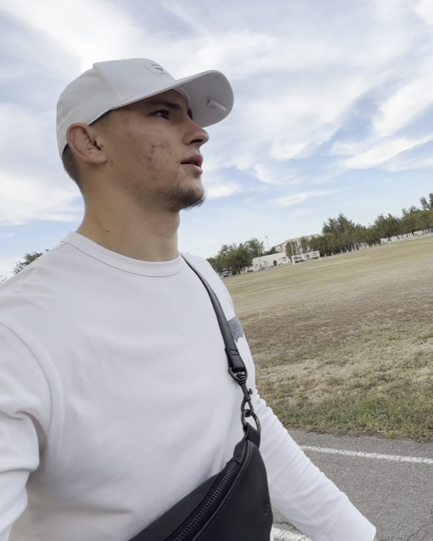

Проверь свой блог за 15 минут. Отвечай «да» или «нет» прямо на странице — в конце увидишь, где у тебя яма и с чего начать.
Авито, маркетплейсы, SMM, дизайн, IT — неважно. Просмотры есть. Подписчики есть. Кто-то даже пишет. А до оплаты доходят единицы.
Обычно думают: мало подписчиков, режут алгоритмы, надо больше снимать. Но чаще дело не в этом. Дело в пяти местах, где ученики теряются по дороге к тебе. Здесь ты найдёшь их у себя сам.

Я делаю автоворонки для экспертов, которые продают обучение, — чтобы рилсы приводили учеников, а не только просмотры.
Я разбираю блоги экспертов и на каждом разборе ищу именно эти пять мест.
Сегодня полезный ролик, завтра что-то из жизни, послезавтра опять польза. Вроде всё правильно. А учеников нет.
Человек увидел рилс и понял, что это про него. Зашёл в профиль и понял, как к тебе попасть. Сделал маленький шаг. Получил ответы на сомнения. Написал — и оплатил.
На этой дороге есть ямы. И если человек споткнулся, он тебе об этом не скажет. Он просто молча уйдёт. Поэтому ты и не видишь, где теряешь учеников.
Дальше покажу каждое место на одном примере — наставнике, который учит зарабатывать на Авито.
Каждый рилс должен ответить человеку на 4 вопроса:
Польза есть. Но для кого это? Что делать после просмотра? Посмотрел, лайкнул, листает дальше.
Сразу понятно, для кого, что получишь и что делать.
Чаще всего проваливается четвёртый вопрос. Человек досмотрел, ему понравилось — и он ушёл. Не потому что неинтересно. А потому что ты не сказал, что делать дальше.
Допиши к следующему рилсу последнюю фразу: «Если ты [кто] — напиши „[слово]“, пришлю [что]».
За 3 секунды человек решает, подходишь ты ему или нет. Шапка профиля — не рассказ о себе. Это ответ на один вопрос: «Ты мне подходишь?»
Проверка на друге. Покажи шапку человеку не из твоей сферы. Понял без объяснений — отлично. Пришлось объяснять — переписывай.
Перепиши первую строку по формуле: «Учу [кого] [чему] → [какой результат]».
Кстати, эти два места я смотрю первыми, когда эксперт пишет мне «разбор». Часто уже здесь видно, куда уходят ученики. Как попасть на разбор — в конце. А следующее место, по-моему, самое важное.
Человеку зашёл твой рилс. Он даже подумал: «Надо бы у него поучиться». И что дальше? В конце ролика — ничего. В шапке — «пиши в директ».
А писать первым неловко. Что писать? «Здравствуйте, а сколько стоит?» Проще отложить. Сказал себе «потом напишу» — и забыл.
Это как магазин без двери: витрина красивая, а зайти некуда.
Человек пишет слово, получает чек-лист — и у вас начинается разговор.
Кстати, ты получил этот гайд именно так. Написал слово — получил пользу. Тебе было легко, потому что я ничего не просил купить.
Придумай одно слово и одну полезную вещь, которую пришлёшь в ответ. Для начала хватит списка из 5 пунктов в заметках.
Даже получив полезное, человек ещё не готов идти к тебе учиться. У него в голове три вопроса. Нажми на карточку — покажу, как на них отвечает наставник по Авито.
Пока на эти вопросы нет ответов, человек не купит. И рилс за 30 секунд на них не ответит. Отвечает то, что идёт после: полезные материалы, истории учеников, ответы на вопросы, разговор с тобой.
Задача не в том, чтобы привести ещё тысячу. А в том, чтобы из этой же тысячи купили не пять, а пятнадцать.
Выпиши три вопроса своих учеников — их словами. На каждый — тема одного рилса.
Самое обидное место. Здесь уходят люди, которые уже почти твои.
Один эксперт рассказал мне: с начала блога у него было шесть-семь заявок — и одна оплата. Остальные: «да, хочу», «давай обсудим», «согласен» — и пропадают.
Люди пишут. А между «хочу» и «плачу» нет понятного шага: что входит, сколько стоит, когда старт.
Ответ быстро, с вопросом и понятным следующим шагом.
Пройди путь ученика сам. Открой свой рилс так, как будто видишь себя впервые. Зайди в профиль. Нажми ссылку. Попроси друга написать тебе «сколько стоит?» и засеки, через сколько ответишь. Где споткнулся ты — там спотыкаются и твои будущие ученики.
Напиши мне слово разбор
Подходит, если ты продаёшь обучение или наставничество. Даже если дальше не будем работать, уйдёшь с понятным планом.